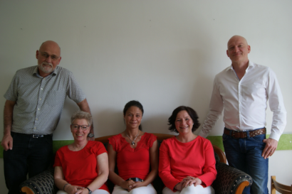

Das Praxis-Team: Klicken Sie auf uns ...
Sprechzeiten
Montag
- 8.00 - 12.00
- 15.00 - 18.00
Dienstag
- 8.00 - 12.00
- 15.00 - 18.00
Mittwoch
- 8.00 - 12.00
Donnerstag
- 8.00 - 12.00
- 15.00 - 18.00
Freitag
- 8.00 - 12.00
sowie nach
Vereinbarung
Straße 32
42929 Wermelskirchen Telefon 02196 82323 Rezepttelefon 02196 886290 E-Mail hausarztpraxis-ors32@t-online.de Fax 02196 974886
Urlaub
So finden Sie uns
Von der Bushaltestelle
Wermelskirchen Markt,
Obere
Remscheider Straße
für ca. 200m in Richtung
Thomas-Mann Straße
folgen.
Herzlich Willkommen in der Hausarztpraxis Bergerhoff
Die Praxis besteht seit 2002 an der Oberen Remscheider Straße 32 in Wermelskirchen.
Als Arzt in eigener Praxis habe ich nach wie vor Freude an der hausärztlichen Betreuung junger wie alter Menschen. Es sind Menschen unterschiedlicher sozialer wie geografischer Herkunft. Im Sinne eines ganzheitlichen Ansatzes geht es mir und meinem Team nicht nur um Therapie, sondern immer auch um Vorbeugung durch Beratung zur Lebensweise, zu psychosozialen Belastungen, zur Impfprävention und zu arbeitsmedizinischen Fragen. Dabei mache ich keine Unterschiede zwischen Kassen- und Privatpatienten.
Aufgrund meiner Ausbildung und Erfahrung behandele ich sämtliche Erkrankungen der Allgemeinmedizin sowie der Inneren Medizin und biete außerdem Vorsorgeuntersuchungen an. Dazu gehören erweiterte Gesundheitsuntersuchung, Krebsvorsorge, arbeitsmedizinische Vorsorgeuntersuchungen sowie Untersuchungen nach Fahrerlaubnisverordnung.
In unseren hell gestalteten Praxisräumen im Zentrum von Wermelskirchen begrüßt Sie ein freundliches Team. Im Haus ist ein Aufzug vorhanden.
Hausbesuche führe ich täglich außerhalb der Sprechstunden durch. Nicht nur in den Pflegeheimen werden Sie mich antreffen, sondern auch im häuslichen Bereich können Sie jederzeit meinen Einsatz und Beistand erwarten, auch wenn eine aufwändigere, palliativmedizinische Behandlung erforderlich wird.
Mit den Fachärzten und Krankenhäusern der Umgebung bin ich gut vernetzt und ich bin in der Lage in dringenden Fällen die Terminvergabe zu beschleunigen.
Ich bilde mich regelmäßig fort in den Themen der hausärztlichen Versorgung, der Reisemedizin und der Arbeitsmedizin. Neben der hausärztlichen Arbeit bin ich für Wermelskirchener Betriebe verschiedenster Branchen und deren Mitarbeiter als Betriebsarzt tätig.